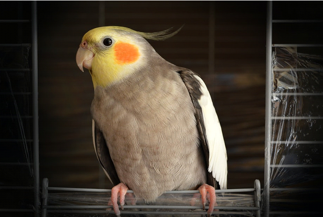

Evidenced-based pet care advice for every pet lover
Birds

Birds are very intriguing creatures as they can range from birds as small as a Cuban bee hummingbird (about two inches long and a little over 1/20 of an ounce) to as large as an ostrich. While most birds fly, some don't. Birds are amazing and each breed is unique, particularly when it comes to their relational needs and well-being. Unfortunately, birds can experience sadness and depression just like humans. Several root causes may be responsible for your bird's depression such as an illness (either physical or mental), losing its companion, or increasingly becoming bored. Some signs to help identify if your bird is experiencing depression may include the following:
reduced appetite
becoming increasingly irritable
aggressive behavior
songs have a different, more solemn tone.
Be sure to tell your veterinarian if you see signs of any of these symptoms. Just like many illnesses, identifying and treating the symptoms earlier may drastically increase the lifespan of your birdie.